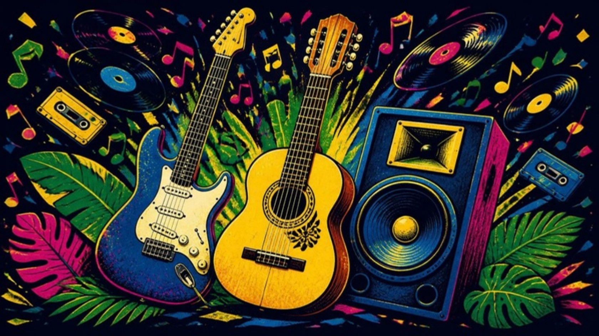

O jogo da linha do tempo com hits do Brasil: rock nacional, funk das antigas, sertanejo raiz e sertanejo universitário.
Como jogar
Objetivo
Ser o primeiro a montar uma linha do tempo com 10 cartas na ordem certa dos anos.
Preparação
- Joguem sozinhos ou em equipes. Cada um recebe 1 carta com o lado do ano para cima: é o começo da sua linha do tempo.
- Cada um recebe 2 fichas Hitaço (opcional, deixa o jogo mais estratégico).
- Escolham o DJ, que usa este app (dá para revezar). Quem é DJ não deve usar relógio inteligente, que pode mostrar o nome da música.
A rodada
- O DJ escaneia a carta do topo do monte (lado do QR code) e a música começa a tocar.
- O jogador à esquerda do DJ coloca a carta, com o QR para cima, na sua linha do tempo: antes, depois ou entre as cartas que já tem.
- Vire a carta. Se estiver no lugar certo, o jogador fica com ela. Se não, ela vai para o descarte.
- A linha do tempo vai da mais antiga (esquerda) para a mais nova (direita). Se a música for do mesmo ano de uma carta sua, pode ficar antes ou depois dela: as duas posições valem.
Fichas Hitaço
- Ganhar: acerte o nome da música e o artista e ganhe 1 ficha (mesmo que erre a posição). Máximo de 5 fichas.
- Pular: na sua vez, gaste 1 ficha para pular a música e pegar outra carta.
- Roubar: na vez de outro jogador, se achar que ele errou, grite “HITAÇO!” e ponha sua ficha na linha do tempo dele, no lugar que você acha certo. Se você acertar, rouba a carta. Se ele tinha acertado, você perde a ficha. Quem gritou primeiro coloca a ficha primeiro.
- Comprar: troque 3 fichas por 1 carta colocada direto na sua linha do tempo, sem adivinhar. Isso deve ser feito antes de ouvir a música.
Fim
Vence quem completar 10 cartas na sua linha do tempo.
Variações
- Profissional: para ficar com a carta (ou roubar), também precisa dizer artista e música. Todos começam com 5 fichas e não ganham fichas novas.
- Expert: precisa dizer artista, música e o ano exato. Todos começam com 3 fichas e não ganham fichas novas.
- Cooperativo: todos jogam como uma equipe só, com 5 fichas e 1 carta inicial. Cada erro custa 1 ficha: juntem 10 cartas antes de as fichas acabarem.
- Mais difícil: menos fichas ou mais cartas para completar a linha do tempo.
Aponte a câmera para o QR code da carta.